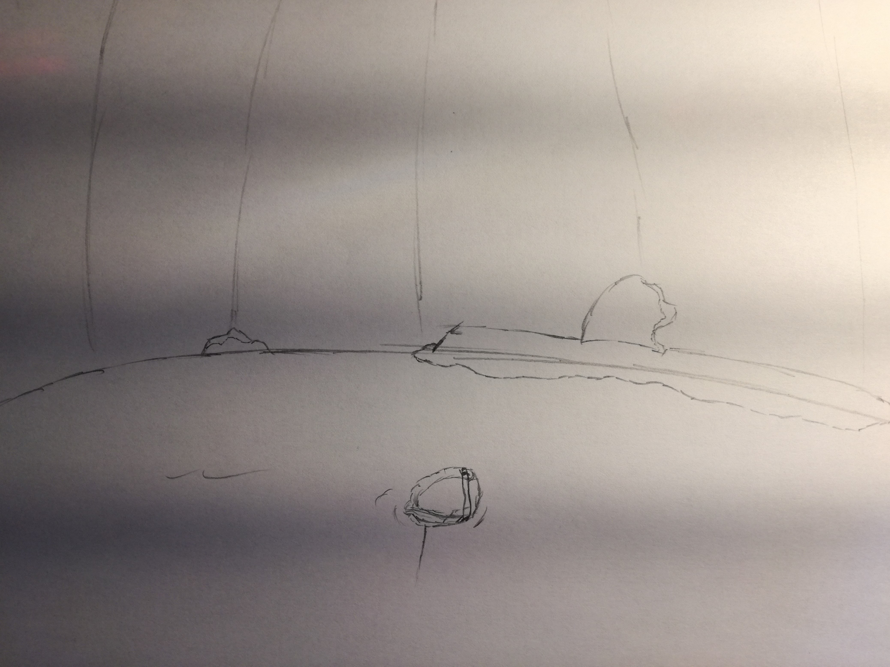

As you crawl through the small tunnel you begin to hear the sound of running water, as you emerge you see that you have entered an underground lake with a small stream entering it and on the other side of the lake you can make out two separate exits one is almost flooded the other is high and dry.
Also, floating in the middle of the lake is a small bag that appears to be made of waterproof material.
Search the Bag
Go through the flooded exit
Go through the other exit
Give up